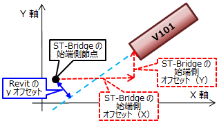

| ブレースの生成 |
| 1 |
断面ID（id_section）と合致する断面IDの断面タイプを取得する。タイプが見つからない場合はタイプを生成する。 |
| 2 |
断面IDからST-Bridgeのブレース断面を探し、所属階を取得する。所属階を配置の基準レベルとする。 |
| 3 |
始端節点ID（idNode_start）、終端節点ID（idNode_end）の座標を取得する。 |
| 4 |
取得した断面タイプ、節点座標位置からブレースを生成する。 |
| 5 |
ブレース生成後、インスタンスパラメータに各属性を設定する。 |
| 6 |
レベル・オフセットは以下のように変換する。
| パラメータ名 |
処理内容 |
始端レベル オフセット
終端レベル オフセット |
節点の位置およびレベルマッピングオフセットによる計算値 |
| yz位置合わせ |
「個別」を設定 |
始端y位置合わせ
終端y位置合わせ |
「基準点」を設定 |
| 始端yオフセット値 |
ブレースの始端側座標を
始端側オフセット（X）[offset_start_X]、
始端側オフセット（Y）[offset_start_Y]分、
終端側座標を
終端側オフセット（X）[offset_end_X]、
終端側オフセット（Y）[offset_end_Y]分、
動かしたブレースの延長線と始端節点からの垂線が交わる点までの距離を設定

|
| 終端yオフセット値 |
上記と同じだけ動かした梁の延長線上と終端節点からの垂線が交わる点までの距離を設定 |
始端z位置合わせ
終端z位置合わせ |
「上」を設定 |
| 始端zオフセット値 |
始端側オフセット（Z）[offset_start_Z]を設定 |
| 終端zオフセット値 |
終端側オフセット（Z）[offset_end_Z]を設定 |
|
| 7 |
パラメータ 構造用途 は「ブレース」とする。 |